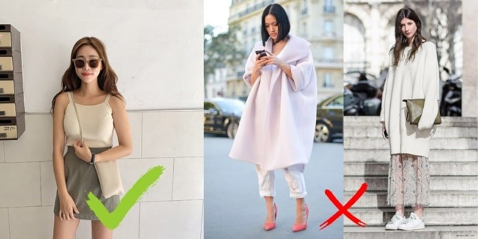

Phối đồ cho người gầy thế nào để các nàng tự tin thả dáng trước đám đông? Trang phục nào những cô nàng “cò hương” nên chọn lựa? Hãy cùng chúng tôi tìm hiểu nhé.
Đương nhiên rồi! Những chiếc quần baggy sẽ là sự lựa chọn hàng đầu cho những nàng gầy để che đi đôi chân khẳng khiu. Các bạn có thể mix cùng áo sơ mi, áo phông hay bất cứ loại áo nào bạn muốn. Chiếc quần này đều hợp.
Cách mặc đồ cho người gầy nữ ra sao cũng cần lưu ý nhiều đến họa tiết của áo. Một chiếc áo kẻ ngang chắc chắn sẽ hợp với bạn hơn là áo kẻ dọc. Mix cùng với một chiếc quần short đơn giản thôi cũng sẽ giúp bạn sành điệu và cá tính như những fashionista
Bên cạnh quần và áo thì không thể thiếu được những chiếc váy cho cô nàng bánh bèo. Nếu bạn có vóc dáng nhỏ nhắn và gầy thì nên chọn những chiếc đầm suông hoặc đầm dáng chữ A để mặc. Hạn chế mặc những chiếc đầm quá bó, sẽ lộ hết khuyết điểm trên cơ thể của bạn. Các bạn có thể chọn những chiếc váy suông hoa nhí hay váy suông dáng babydoll. Kết hợp cùng những đôi sandals cao gót hoặc những chiếc giày thể thao đều hợp.
Tuy nói rằng người gầy không nên mặc áo quần quá rộng, tùy nhiên với những chiếc áo oversize lại là một ngoại lệ. Một chiếc áo sơ mi dáng ovezise mix cùng với quần ống đứng sẽ giúp nàng nhìn mập mạp và cân đối hơn nhiều đó.
Bên cạnh họa tiết kẻ ngang thì những chiếc áo có thiết kế phần bèo nhún hay diềm ren, đăng ten cũng sẽ là một sự lựa chọn không tồi mà bạn có thể cân nhắc. Vừa nữ tính, vừa thời trang mà lại có thể giúp vóc dáng cân đối hơn thì tội gì mà không thử ngay phải không nào?
Những chiếc chân váy dáng xòe cũng là loại trang phục mà cô nàng “cò hương” không nên bỏ lỡ. Phần vạt váy xòe bồng bềnh không chỉ có thể giúp nàng tròn trịa, đầy đặn hơn mà còn có thể giúp bạn thêm điệu đà và nữ tính. Chân váy xòe cũng không kén đồ. Các bạn có thể mix chân váy xòe cùng áo phông, áo sơ mi, áo croptop hay bất cứ loại áo nào đều phù hợp.
Nếu bạn vẫn nghĩ rằng gầy mặc đồ rộng sẽ giúp bạn nhìn béo hơn thì thật sai lầm. Hãy dừng lại ngay hành động này nếu như bạn muốn mình thời trang và xinh đẹp hơn. Với những cô nàng sở hữu thân hình “cò hương”, hãy chọn những bộ đồ vừa vặn với cơ thể của mình. Điều này sẽ giúp bạn nhìn cân đối và thoải mái nhất. Tuyệt đối không mặc đồ quá rộng hay quá chật. Nếu quá chật và bó sẽ khiến các khuyết điểm của bạn bị lộ hết. Nếu đồ quá rộng sẽ làm cho bạn bị chìm trong quần áo. Sẽ chẳng hề tốt chút nào đâu!
Có thể nói cách mix đồ nhiều layer là phong cách thời trang sinh ra dành cho những cô nàng gầy. Chỉ với một chiếc áo phông đơn giản, khoác thêm bên ngoài một chiếc áo khoác, có thể là áo cardina hay áo blazer,… là các bạn đã có 1 outfit tràn đầy năng lượng và cá tính cho một ngày mới rồi. Cách phối đồ này vào mùa đông còn cực ấm áp. Đảm bảo sức khỏe cùng vẻ đẹp của chị em đều được vẹn toàn.
Một chiếc áo sơ mi có viền bèo nhún sẽ giúp các cô nàng gầy nhìn đầy đặn hơn so với áo sơ mi trơn. Đây chính là lý do khiến cho bạn nên chọn những trang phục thiết kế rườm rà một chút. Ngược lại, những cô nàng mập mạp nên tránh chọn những mẫu áo này nếu không muốn mình béo lại càng béo thêm nhé.
Thật ra những cô nàng gầy sẽ chọn quần dễ dàng hơn những nàng béo. Các bạn chỉ cần không mặc những chiếc quần skinny quá ôm sát là được. Còn lại, những loại quần như baggy, culottes, quần ống loe, ống côn,… các nàng có thể thoải mái chọn lựa. Sẽ chẳng hề lo lắng gặp phải tình huống xấu hổ nào cả.

Bên cạnh quần hay áo thì chân váy cũng là item cứu cánh cho các chị em “mình hạc xương mai”. Các bạn nên chọn những chiếc chân váy dáng xòe hay dáng chữ A để mặc. Tránh xa những chiếc chân váy bó body hay váy quá ngắn. Những chiếc váy này sẽ làm lộ khuyết điểm trên cơ thể của bạn. Chẳng vui gì khi mặc chiếc váy làm lộ ra đôi chân gầy tong teo như hai que tăm phải không nào. Chiều dài váy đến trên đầu gối hoặc đến bắp chân sẽ là chiều dài phù hợp nhất.
Ngược lại với màu đen có thể giúp nàng gầy đi thì những màu sáng sẽ giúp nàng nhìn mập mạp, có da có thịt hơn. Đây là cách chọn trang phục giúp ăn gian cân nặng hiệu quả. Ngoài ra, các bạn khi mix đồ cũng nên lưu ý những màu sắc của quần áo và giày dép phải match với nhau nữa nhé.
Lưu ý tiếp theo khi chọn quần áo thời trang cho người gầy là nữ giới là không nên mặc những chiếc áo có phần cổ khoét quá sâu, những mẫu áo cổ V hay cổ tim rộng. Tuy nhiên, những nàng mập có thể cân nhắc đến những mẫu áo này. Nó sẽ giúp bạn có thể kéo dài phần cổ một cách khéo léo, từ đó giúp bạn thon gọn hơn đó.